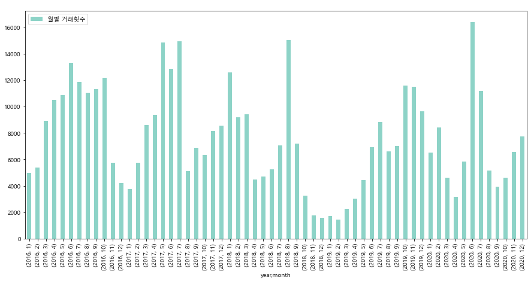

최근 5년간 서울 주택별 월별 거래량
2016~2020 서울 아파트 매매 월별 거래량

최근 5년 동안 서울 아파트 매매 거래가 가장 많았던 달은 2020년 6월이며, 거래가 가장 적었던 달은 2019년 2월이다.
2016년부터 2020년 사이 매년 아파트 거래량이 가장 많은 달은 5~8월 사이이다.
*아파트, 오피스텔, 단독다가구, 연립다세대 모든 차트에서 공통적으로 2019년 2월의 거래량이 가장 적었다.
이는 2018년 9·13 부동산 대책 이후 모든 부동산 거래량이 급감했던 것의 결과이다.